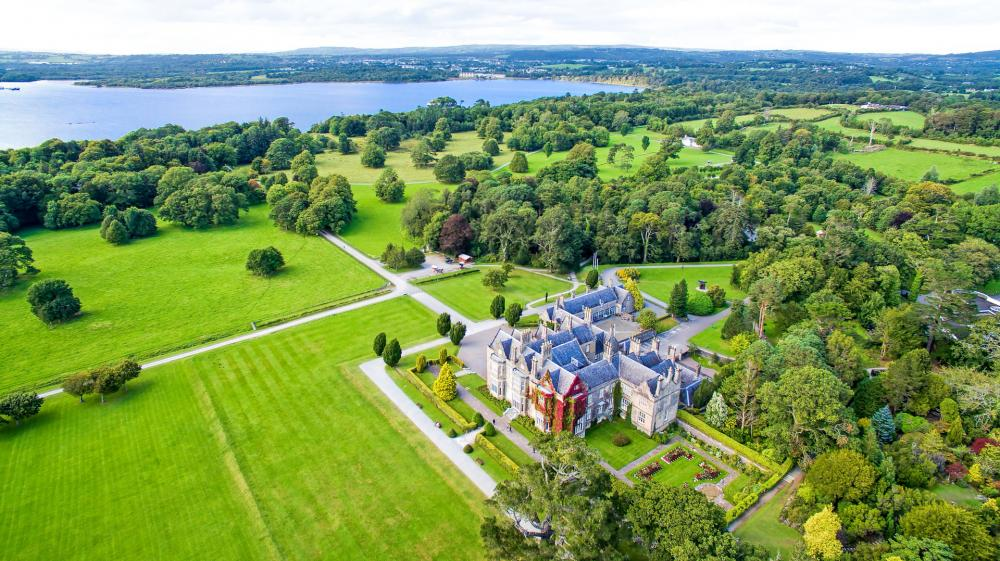
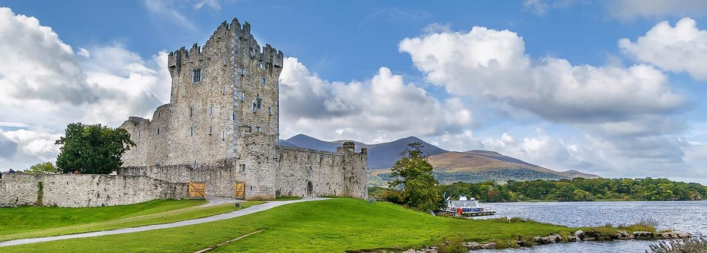
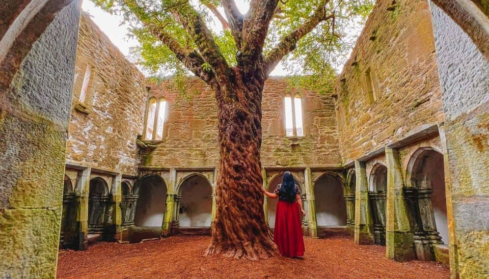

Muckross House
Muckross House was built for Henry Arthur Herbert and his wife, the water-colourist Mary Balfour Herbert. This was actually the fourth house that successive generations of the Herbert family had occupied at Muckross over a period of almost two hundred years. William Burn, the well-known Scottish architect, was responsible for its design. Building commenced in 1839 and was completed in 1843.
Originally it was intended that Muckross House should be a larger, more ornate, structure. The plans for a bigger servants’ wing, stable block, orangery and summer-house, are believed to have been altered at Mary’s request. Today the principal rooms are furnished in period style and portray the elegant lifestyle of the nineteenth century landowning class. In the basement, one can imagine the busy bustle of the servants as they went about their daily chores.
During the 1850s, the Herberts undertook extensive garden works in preparation for Queen Victoria’s visit in 1861. Later, the Bourn Vincent family continued this gardening tradition. They purchased the estate from Lord and Lady Ardilaun early in the twentieth century. It was at this time that the Sunken Garden, Rock Garden and the Stream Garden were developed.

Official website: https://muckross-house.ie/
Ross Castle
Ross Castle was built in the 15th Century and was the seat of the O’Donoghue Mor. During the second Desmond Rebellion which led to the Plantation of Munster in the 1580s, the castle changed hands and was taken over by the McCarthy Mors.
To facilitate the Plantation of Munster, the British Government commissioned a survey of the area. This huge task was entrusted to a gentleman named Sir Valentine Browne. Browne was given 6500 acres of land in Kerry and also some land near the town of Hospital in Co. Limerick. Browne also bought the estates of the McCarthy family which included Ross Castle and the Lakes of Killarney. Donald McCarthy, from whom Browne bought the estate died without a male heir and is buried in Muckross Abbey.
Ludlow marched on Ross Castle with 4000 foot soldiers and 200 horses. The castle withstood the attack due to it’s position on the Northern point of Ross Island. The Southern part of Ross Island consisted of 150 acres of land for grazing sheep, cattle and deer as well as the lakes for fish and water. Muskerry was set up to endure a siege for many months. As the weeks went on, Ludlow heard a local prophecy regarding Ross Castle: “Ross may all assault disdain till on Lough Lein strange ship shall sail.”

Official website: https://heritageireland.ie/places-to-visit/ross-castle/
Muckross Abbey
Although it stands in ruins today, the abbey was actually a Franciscan Friary that was founded by lord Donal McCarthy Mór around 1445.The friars here were of the Observantine chapter who were very strict to their vows of chastity. They lived a hard life, without material possessions or luxuries, and were extremely devout.
It was a major burial ground for clan chieftains and even famous Kerry poets. Geoffrey O’Donoghue, Aogán O’Rathaille and Eoghan Ruadh O’Suilleabhain are all buried on the grounds. Despite it being a major religious institution, it had a turbulent history. During the English Reformation, there were multiple raids and attempts to close it

Official website: https://theringofkerry.com/muckross-abbey